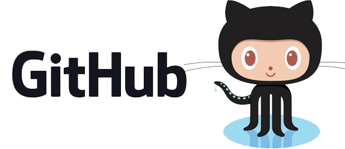
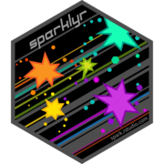

flowchart TD
R[R / RStudio] --> B1[Linguagens e Ambientes]
R --> B2[Controle e Pipelines]
R --> B3[Dados e Bancos]
R --> B4[Nuvem e Plataformas]
R --> B5[Produção e MLOps]
B1 --> i1[Python - Reticulate]
B1 --> i2[Positron]
B1 --> i3[Quarto]
B2 --> i4[GitHub]
B2 --> i5[Targets]
B2 --> i6[Docker]
B3 --> i7[PostgreSQL e DuckDB]
B3 --> i8[Arrow e Parquet]
B3 --> i9[APIs REST - httr2]
B4 --> i10[GCP - BigQuery]
B4 --> i11[Databricks]
B4 --> i12[Spark - sparklyr]
B5 --> i13[Plumber]
B5 --> i14[Vetiver]
B5 --> i15[Shiny em produção]
Aula 14. R e RStudio | 14 integrações que você precisa conhecer
Conectando R com o ecossistema moderno de dados
Democratização
Esta aula foi construída para mostrar que o R vai muito além da análise estatística. Ele se conecta, ele escala, ele vai para produção.

Essa é a Meguy, minha gatinha linda e a mascote do Café com R.
Acompanhe o Café com R

Objetivos da apresentação
- Conhecer 14 integrações reais e aplicáveis do R com o ecossistema de dados
- Entender o pacote principal de cada integração
- Ver exemplos mínimos e funcionais de cada conexão
- Identificar Atençãos e boas práticas em cada caso
- Ampliar a visão do R como ferramenta de produção
Por que integrações importam?
O R sozinho é poderoso. Conectado, ele é estratégico.
- Dados estão em bancos, APIs, nuvem e pipelines - não apenas em arquivos CSV
- Times de dados usam múltiplas ferramentas - o R precisa conversar com todas
- Produção exige reprodutibilidade, versionamento e deploy - não apenas análise
- Integrações eliminam silos entre linguagens, plataformas e equipes
Por que integrações importam?
O R sozinho é poderoso. Conectado, ele é estratégico.
Note
Esta aula apresenta 14 integrações organizadas em 5 blocos temáticos. Cada integração tem conceito, exemplo mínimo reproduzível e dica prática.
Mapa das 14 integrações
Bloco 1 - Linguagens e Ambientes
Integração 1 - Python via Reticulate
O que é: O pacote reticulate permite executar código Python dentro do ambiente R, com tradução bidirecional de objetos entre as duas linguagens.
Por que existe: Python domina machine learning e automação. R domina estatística e visualização. O reticulate elimina a necessidade de escolher entre os dois.
Integração 1 - Exemplo mínimo
Integração 1 - Dica importante
Warning
Atenção comum: O R e o Python precisam usar o mesmo ambiente virtual. Se o reticulate não encontrar os pacotes Python, verifique qual interpretador está ativo com py_config().
Tip
Dica: Use use_virtualenv("nome_do_env") no início do script para garantir que o ambiente correto seja sempre carregado, independente da máquina.
Documentação oficial: rstudio.github.io/reticulate
Integração 1 - Python via Reticulate
Tem aulas aqui no meu site:
Integração 2 - Positron, a nova IDE da Posit
O que é: O Positron é a nova IDE desenvolvida pela Posit, sucessora do RStudio, com suporte nativo a R e Python no mesmo ambiente.
Por que existe: O RStudio foi construído para R. O Positron foi construído para cientistas de dados que trabalham com múltiplas linguagens, sem abrir mão da experiência do RStudio.
Integração 2 - Na prática
Principais diferenças em relação ao RStudio:
- Suporte nativo a Python sem necessidade do
reticulatepara execução interativa - Terminal integrado com detecção automática de ambiente virtual
- Extensões via marketplace do VS Code - o Positron é baseado no VS Code
- Console separado por linguagem:
R e Pythonrodam lado a lado - Variáveis de
RePythonvisíveis no mesmo painel de ambiente
Integração 2 - Dica importante
Tip
Dica: Se você já usa RStudio, o Positron mantém os atalhos de teclado e o layout familiar. A curva de transição é pequena.
Warning
Atenção: O Positron não substitui completamente o RStudio ainda. Projetos Quarto complexos e Shiny têm suporte em evolução. Teste antes de migrar em produção.
Download: positron.posit.co
Integração 2 - Curso Positron
Slides - Clique aqui.
Integração 2 - CHEATSHEET Positron
Integração 3 - Quarto, publicação multiplataforma
O que é: O Quarto é o sistema de publicação científica e técnica da Posit. Suporta R, Python, Julia e Observable no mesmo documento.
Por que existe: Substituiu o R Markdown com uma arquitetura mais moderna, independente do R e compatível com múltiplos formatos de saída.

Integração 3 - Exemplo mínimo
Integração 3 - Dica importante
Tip
Dica: Use quarto publish para publicar direto no Quarto Pub, GitHub Pages ou Posit Connect a partir do terminal, sem etapas manuais.
Warning
Atenção: Quarto e R Markdown coexistem, mas não são intercambiáveis. A opção output: do R Markdown é format: no Quarto. Atenção ao migrar documentos antigos.
Documentação oficial: quarto.org
Integração 3 - Curso de Quarto
Bloco 2 - Controle, Versionamento e Pipelines
Integração 4 - GitHub via usethis
O que é: Integração do R com Git e GitHub para controle de versão, colaboração e publicação de projetos analíticos.
Por que existe: Análise reproduzível exige rastreabilidade. O Git registra cada alteração no código. O GitHub centraliza o projeto e permite colaboração.

Integração 4 - Exemplo mínimo
# Instalar pacotes necessários
install.packages("usethis")
library(usethis)
# Configurar Git com suas credenciais
use_git_config(
user.name = "Seu Nome",
user.email = "seu@email.com")
# Inicializar repositório Git no projeto atual
use_git()
# Conectar ao GitHub e criar repositório remoto
use_github(private = FALSE)
# Criar token de autenticação
create_github_token()Integração 4 - Operações do dia a dia
library(gert)
# Verificar status dos arquivos modificados
git_status()
# Adicionar arquivos ao stage
git_add(".")
# Registrar commit com mensagem descritiva
git_commit("adiciona análise exploratória de vendas")
# Enviar para o GitHub
git_push()
# Atualizar repositório local com alterações remotas
git_pull()Sobre o pacote gert. Acesse a documentação.
Integração 4 - Dica importante
Tip
Dica: Use usethis::use_gitignore() para criar um .gitignore adequado para projetos R. Isso evita que arquivos .Rhistory, .RData e dados sensíveis sejam versionados por engano.
Warning
Atenção: Nunca versione arquivos com senhas, tokens ou dados pessoais.
Integração 5 - Targets, pipeline reproduzível
O que é: O pacote targets é um sistema de orquestração de workflows analíticos para R. Ele rastreia dependências entre etapas e só reexecuta o que foi modificado.
Por que existe: Análises complexas têm muitas etapas. Reexecutar tudo do zero a cada mudança é ineficiente. O targets resolve isso de forma elegante e rastreável.
Integração 5 - Exemplo mínimo
# _targets.R - arquivo na raiz do projeto
library(targets)
# Definir opções globais do pipeline
tar_option_set(packages = c("dplyr", "ggplot2"))
# Definir as etapas do pipeline como lista de targets
list(
# Etapa 1: carregar dados brutos
tar_target(dados_brutos, read.csv("dados/vendas.csv")),
# Etapa 2: limpar dados - só reexecuta se dados_brutos mudar
tar_target(dados_limpos, dados_brutos |> filter(!is.na(valor))),
# Etapa 3: gerar visualização - só reexecuta se dados_limpos mudar
tar_target(grafico, ggplot(dados_limpos, aes(x = mes, y = valor)) +
geom_col()))Integração 5 - Executando o pipeline
Integração 5 - Targets - Tutorial no GitHub
Integração 5 - Dica importante
Tip
Dica: Combine targets com crew para paralelizar etapas independentes do pipeline. Isso reduz drasticamente o tempo de execução em análises grandes.
Warning
Atenção: O targets armazena os resultados em _targets/objects/. Nunca exclua essa pasta manualmente entre execuções. Use tar_invalidate() para forçar reexecução de etapas específicas.
Documentação: docs.ropensci.org/targets
Integração 6 - Docker com R
O que é: Docker é uma plataforma de containerização que empacota o código, as dependências e o ambiente de execução em uma unidade portátil e reproduzível.
Por que existe: “Funciona na minha máquina” é um problema real em ciência de dados. Docker elimina diferenças de ambiente entre desenvolvimento, teste e produção.
Integração 6 - Exemplo mínimo de Dockerfile
# Imagem base oficial do R com versão fixada
FROM rocker/r-ver:4.4.0
# Instalar dependências do sistema operacional
RUN apt-get update && apt-get install -y \
libcurl4-openssl-dev \
libssl-dev \
libxml2-dev
# Instalar pacotes R necessários
RUN R -e "install.packages(c('tidyverse', 'plumber'), repos='https://cran.r-project.org')"
# Copiar scripts para dentro do container
COPY . /app
WORKDIR /app
# Executar o script principal ao iniciar o container
CMD ["Rscript", "analise.R"]Integração 6 - Comandos essenciais
# Construir a imagem a partir do Dockerfile
docker build -t minha-analise-r .
# Executar o container
docker run minha-analise-r
# Executar com volume - monta a pasta local dentro do container
docker run -v $(pwd)/dados:/app/dados minha-analise-r
# Executar com Shiny exposto na porta 3838
docker run -p 3838:3838 minha-analise-rIntegração 6 - Dica importante
Tip
Dica: Use as imagens do projeto Rocker como base. Elas são mantidas pela comunidade R e já incluem o ambiente correto para diferentes casos de uso: rocker/tidyverse, rocker/shiny, rocker/ml.
Warning
Atenção: Instalar pacotes R dentro do Dockerfile sem fixar versões pode quebrar a imagem em builds futuros. Use renv para registrar versões exatas dos pacotes e restaurá-las no container.
Bloco 3 - Dados e Bancos de Dados
Integração 7 - PostgreSQL e DuckDB via DBI
O que é: O pacote DBI é a interface padrão do R para bancos de dados relacionais. Com ele, é possível conectar, consultar e escrever em PostgreSQL, MySQL, SQLite, DuckDB e outros.
Por que existe: Dados em produção raramente estão em arquivos CSV. Eles vivem em bancos de dados. O DBI com dbplyr permite usar a sintaxe do dplyr para consultar qualquer banco.
Integração 7 - Conectando ao PostgreSQL
library(DBI)
library(RPostgres)
library(dplyr)
library(dbplyr)
# Estabelecer conexão com PostgreSQL
con <- dbConnect(
drv = Postgres(),
host = "localhost",
port = 5432,
dbname = "meu_banco",
user = Sys.getenv("DB_USER"), # nunca escrever credenciais no código
password = Sys.getenv("DB_PASSWORD"))
# Listar tabelas disponíveis
dbListTables(con)
# Referenciar tabela sem carregar na memória
tabela_remota <- tbl(con, "vendas")Integração 7 - Consultando com dbplyr
library(dplyr)
# O dbplyr traduz dplyr para SQL automaticamente
resultado <- tabela_remota |>
filter(ano == 2024) |>
group_by(regiao) |>
summarise(total = sum(valor, na.rm = TRUE)) |>
arrange(desc(total))
# Ver o SQL gerado antes de executar
show_query(resultado)
# Executar e trazer resultado para o R
dados_locais <- collect(resultado)
# Fechar conexão ao finalizar
dbDisconnect(con)Integração 7 - DuckDB local
library(DBI)
library(duckdb)
# DuckDB: banco analítico local, sem servidor, extremamente rápido
con_duck <- dbConnect(duckdb::duckdb(), dbdir = "meu_banco.duckdb")
# Criar tabela a partir de um data frame
dbWriteTable(con_duck, "vendas", dados_vendas, overwrite = TRUE)
# Consultar com SQL diretamente
dbGetQuery(con_duck, "
SELECT regiao, SUM(valor) AS total
FROM vendas
WHERE ano = 2024
GROUP BY regiao
ORDER BY total DESC")
dbDisconnect(con_duck)Integração 7 - Dica importante
Tip
Dica: Armazene credenciais de banco no arquivo .Renviron e acesse com Sys.getenv(). Nunca escreva usuário e senha diretamente no script. Use usethis::edit_r_environ() para abrir o arquivo.
Warning
Atenção: collect() traz todos os dados para a memória do R. Em tabelas grandes, aplique todos os filtros e agregações antes de executar o collect().
Integração 8 - Arrow e Parquet
O que é: O pacote arrow permite ler, escrever e processar arquivos Parquet e datasets particionados sem carregar tudo na memória RAM.
Por que existe: Parquet é o formato padrão de armazenamento analítico em ambientes de nuvem e data lakes. É colunar, comprimido e muito mais eficiente que CSV para grandes volumes.

Integração 8 - Exemplo mínimo
library(arrow)
library(dplyr)
# Escrever um data frame como Parquet
write_parquet(dados, "dados/vendas_2024.parquet")
# Ler arquivo Parquet
vendas <- read_parquet("dados/vendas_2024.parquet")
# Leitura lazy: sem carregar na memória
vendas_lazy <- open_dataset("dados/vendas_2024.parquet")
# Filtrar e agregar antes de trazer para o R
resultado <- vendas_lazy |>
filter(regiao == "Sul") |>
group_by(mes) |>
summarise(total = sum(valor)) |>
collect() # apenas aqui os dados entram na memóriaIntegração 8 - Dataset particionado
library(arrow)
library(dplyr)
# Escrever dataset particionado por ano e mes
write_dataset(
dataset = dados,
path = "dados/vendas/",
format = "parquet",
partitioning = c("ano", "mes")) # cria subpastas automaticamente
# Ler apenas a partição necessária - muito mais rápido
vendas_jan <- open_dataset("dados/vendas/") |>
filter(ano == 2024, mes == 1) |>
collect()Integração 8 - Dica importante
Tip
Dica: Combine arrow com duckdb para análises em datasets muito grandes. O DuckDB consegue consultar arquivos Parquet diretamente com performance superior ao arrow puro em operações complexas.
Warning
Atenção: Ao particionar datasets, escolha as colunas de partição com cuidado. Particionar por uma coluna com muitos valores únicos (como ID de cliente) cria milhares de arquivos pequenos e degrada a performance.
Integração 9 - APIs REST via httr2
O que é: O pacote httr2 permite fazer requisições HTTP para consumir APIs REST diretamente no R, com controle de autenticação, paginação e tratamento de erros.
Por que existe: Grande parte dos dados modernos são acessíveis via API - redes sociais, plataformas financeiras, sistemas internos, serviços de governo. O httr2 é a porta de entrada do R para esse ecossistema.
Integração 9 - Exemplo mínimo
library(httr2)
library(jsonlite)
# Construir e executar requisição GET
resposta <- request("https://servicodados.ibge.gov.br/api/v1/localidades/estados") |>
req_headers(Accept = "application/json") |>
req_perform()
# Verificar status da resposta
resp_status(resposta)
# Extrair e converter o JSON
estados <- resposta |>
resp_body_string() |>
fromJSON()
head(estados[, c("id", "sigla", "nome")])Integração 9 - Requisição com autenticação
library(httr2)
# Requisição com token Bearer - padrão OAuth2
resposta <- request("https://api.exemplo.com/dados") |>
req_auth_bearer_token(Sys.getenv("API_TOKEN")) |>
req_url_query(ano = 2024, formato = "json") |>
req_retry(max_tries = 3) |> # tentar 3 vezes em caso de erro
req_throttle(rate = 10 / 60) |> # máximo 10 requisições por minuto
req_perform()
# Tratar erros HTTP automaticamente
resp_check_status(resposta)
dados <- resposta |>
resp_body_json(simplifyVector = TRUE)Integração 9 - Dica importante
Tip
Dica: Use req_retry() em combinação com req_throttle() para consumir APIs com limites de requisição. Isso evita bloqueios por excesso de chamadas e torna o script resiliente a falhas temporárias.
Warning
Atenção: Nunca armazene tokens de API diretamente no script. Use .Renviron com Sys.getenv("NOME_DO_TOKEN"). Para gerenciar múltiplos tokens com segurança, o pacote keyring é uma boa alternativa.
Integração 9 - APIs REST - Aula

Bloco 4 - Nuvem e Plataformas
Integração 10 - Google Cloud Platform via bigrquery
O que é: O pacote bigrquery conecta o R diretamente ao BigQuery, o data warehouse serverless do Google Cloud, permitindo consultar petabytes de dados com SQL.
Por que existe: BigQuery é amplamente usado em empresas que trabalham com grandes volumes de dados. O bigrquery traz esses dados para o ambiente R sem precisar exportar arquivos.
Integração 10 - Exemplo mínimo
library(bigrquery)
library(DBI)
# Autenticar com conta Google - abre navegador na primeira vez
bq_auth(email = "seu@email.com")
# Conectar ao projeto BigQuery
con <- dbConnect(
drv = bigquery(),
project = "meu-projeto-gcp",
dataset = "meu_dataset",
billing = "meu-projeto-gcp") # projeto que receberá a cobrança
# Consultar tabela pública do BigQuery
query <- "
SELECT ano, SUM(valor) AS total
FROM `meu-projeto-gcp.meu_dataset.vendas`
WHERE ano >= 2022
GROUP BY ano
ORDER BY ano
"
resultado <- dbGetQuery(con, query)Integração 10 - Com dbplyr
library(dplyr)
library(dbplyr)
# Referenciar tabela do BigQuery
tabela_bq <- tbl(con, "vendas")
# Usar dplyr normalmente - o dbplyr traduz para SQL do BigQuery
resultado <- tabela_bq |>
filter(ano >= 2022) |>
group_by(ano, regiao) |>
summarise(total = sum(valor, na.rm = TRUE), .groups = "drop") |>
arrange(desc(total)) |>
collect() # executa a query e traz resultado para o R
dbDisconnect(con)Integração 10 - Dica importante
Tip
Dica: Em projetos com múltiplos colaboradores, use a autenticação via conta de serviço em vez de conta pessoal. Crie uma chave JSON no GCP Console e autentique com bq_auth(path = "chave.json").
Warning
Atenção: O BigQuery cobra por volume de dados processado na consulta, não por tempo. Filtre as partições explicitamente no WHERE e evite SELECT * em tabelas grandes para controlar custos.
Integração 10 - Google Cloud Platform via bigrquery- Projeto no GitHub
Integração 11 - Databricks via odbc
O que é: O Databricks é uma plataforma de dados baseada em Apache Spark. A conexão com R é feita via ODBC ou pelo pacote sparklyr, permitindo executar análises em clusters de alto desempenho.
Por que existe: Empresas com grandes volumes de dados usam Databricks como plataforma central de analytics e ML. Integrar R com Databricks significa levar análises R para a escala corporativa.
Integração 11 - Databricks via odbc
Integração 11 - Conectando via ODBC
library(DBI)
library(odbc)
# Conexão via ODBC com Databricks
# Requer instalação do driver ODBC da Databricks
con <- dbConnect(
drv = odbc::odbc(),
Driver = "Simba Spark ODBC Driver",
Host = Sys.getenv("DATABRICKS_HOST"),
Port = 443,
HTTPPath = Sys.getenv("DATABRICKS_HTTP_PATH"),
AuthMech = 3,
UID = "token",
PWD = Sys.getenv("DATABRICKS_TOKEN"),
ThriftTransport = 2,
SSL = 1)
# Listar tabelas disponíveis no schema
dbGetQuery(con, "SHOW TABLES IN meu_schema")Integração 11 - Consultando Delta Tables
library(dplyr)
library(dbplyr)
# Referenciar Delta Table no Databricks
vendas <- tbl(con, dbplyr::in_catalog("hive_metastore", "meu_schema", "vendas"))
# Consultar com dplyr - traduzido para Spark SQL
resultado <- vendas |>
filter(ano == 2024) |>
group_by(regiao) |>
summarise(total = sum(valor, na.rm = TRUE)) |>
collect()
dbDisconnect(con)Integração 11 - Dica importante
Tip
Dica: Armazene as credenciais do Databricks no .Renviron: DATABRICKS_HOST, DATABRICKS_TOKEN e DATABRICKS_HTTP_PATH. Isso garante que o script funcione em qualquer máquina sem expor dados sensíveis.
Warning
Atenção: A conexão ODBC com Databricks requer que o driver da Simba esteja instalado no sistema operacional. Em ambientes Docker, inclua a instalação do driver no Dockerfile para garantir reprodutibilidade.
Integração 12 - Spark via sparklyr
O que é: O pacote sparklyr conecta o R ao Apache Spark, permitindo processar datasets distribuídos com a sintaxe familiar do dplyr.
Por que existe: Quando os dados não cabem na memória de uma única máquina, o Spark distribui o processamento em um cluster. O sparklyr torna essa escala acessível para usuários de R.

Integração 12 - Spark via sparklyr
Integração 12 - Exemplo mínimo
library(sparklyr)
library(dplyr)
# Instalar Spark localmente para desenvolvimento
spark_install(version = "3.5")
# Conectar ao Spark local
sc <- spark_connect(master = "local")
# Copiar data frame para o Spark
vendas_spark <- copy_to(sc, dados_vendas, "vendas", overwrite = TRUE)
# Processar com dplyr - executa no Spark
resultado <- vendas_spark |>
filter(ano == 2024) |>
group_by(regiao) |>
summarise(total = sum(valor, na.rm = TRUE)) |>
collect()
spark_disconnect(sc)Integração 12 - Conectando a cluster remoto
library(sparklyr)
# Conectar a cluster Spark remoto (YARN, Kubernetes ou Databricks)
sc <- spark_connect(
master = "yarn",
config = spark_config())
# Ler arquivo Parquet direto do HDFS ou S3
dados_hdfs <- spark_read_parquet(
sc,
name = "vendas",
path = "hdfs://caminho/para/vendas/")
# Ver plano de execução do Spark
dados_hdfs |>
filter(regiao == "Sul") |>
spark_explain()Integração 12 - Dica importante
Tip
Dica: Use spark_connect(master = "local") durante o desenvolvimento para testar o código localmente antes de executar no cluster. O comportamento do dplyr é idêntico nos dois modos.
Warning
Atenção: collect() no Spark traz todos os dados para a memória do R. Em datasets grandes, isso pode travar ou derrubar a sessão. Sempre agregue antes de coletar.
Bloco 5 - Produção e MLOps
Integração 13 - Plumber, R como API REST
O que é: O pacote plumber transforma funções R em endpoints de API REST. Com uma anotação simples no código, qualquer função passa a ser acessível via HTTP.
Por que existe: Modelos e análises em R precisam ser consumidos por outros sistemas - aplicações web, dashboards externos, pipelines de dados. O Plumber é a ponte entre o R e esses sistemas.
Integração 13 - Exemplo mínimo
# arquivo: plumber.R
library(plumber)
# Endpoint GET simples
#* @get /status
function() {
list(status = "ativo", versao = "1.0.0")
}
# Endpoint POST que recebe dados e retorna previsão
#* @post /prever
#* @param valor:numeric Valor de entrada para o modelo
function(valor) {
# modelo carregado previamente com readRDS()
predicao <- predict(modelo, newdata = data.frame(x = as.numeric(valor)))
list(entrada = valor, predicao = predicao)
}Integração 13 - Iniciando a API
library(plumber)
# Carregar e iniciar a API localmente
api <- plumb("plumber.R")
api$run(port = 8000)
# Testar via R com httr2
library(httr2)
request("http://localhost:8000/status") |>
req_perform() |>
resp_body_json()
# Testar endpoint POST
request("http://localhost:8000/prever") |>
req_method("POST") |>
req_url_query(valor = 42) |>
req_perform() |>
resp_body_json()Integração 13 - Dica importante
Tip
Dica: Use o arquivo entrypoint.R para iniciar a API no Docker. Combine com rocker/plumber como imagem base para deploy consistente em qualquer ambiente de nuvem.
Warning
Atenção: O Plumber é single-threaded por padrão. Para produção com múltiplas requisições simultâneas, configure workers com o pacote promises e future, ou use o Posit Connect que gerencia isso automaticamente.
Documentação: www.rplumber.io
Integração 14 - Shiny em produção
O que é: Shiny é o framework do R para criar aplicações web interativas. Colocar um app Shiny em produção significa torná-lo acessível, estável e seguro para usuários externos.
Por que existe: Análises em R precisam chegar a quem toma decisões. Shiny transforma scripts R em interfaces navegáveis, sem exigir que o usuário final conheça programação.
Integração 15 - Opções de deploy
| Plataforma | Perfil | Custo |
|---|---|---|
| shinyapps.io | Individual e pequenas equipes | Freemium |
| Posit Connect | Corporativo e times | Pago |
| Hugging Face Spaces | Comunidade e portfólio | Gratuito |
| Servidor próprio | Controle total | Infraestrutura |
| Docker + nuvem | Produção escalável | Infraestrutura |
Integração 15 - Deploy no shinyapps.io
library(rsconnect)
# Configurar conta shinyapps.io - executar uma vez
rsconnect::setAccountInfo(
name = "seu-usuario",
token = Sys.getenv("SHINYAPPS_TOKEN"),
secret = Sys.getenv("SHINYAPPS_SECRET"))
# Deploy do app
rsconnect::deployApp(
appDir = "meu_app/",
appName = "analise-vendas",
forceUpdate = TRUE)
# Verificar status do deploy
rsconnect::showLogs(appName = "analise-vendas")Integração 15 - Deploy no Hugging Face
Integração 15 - Dica importante
Tip
Dica: Use o pacote golem para estruturar Shiny apps como pacotes R. Isso facilita testes automatizados, deploy consistente e manutenção em equipe. É o padrão recomendado para apps de produção.
Warning
Atenção: Apps Shiny que carregam dados a cada sessão de usuário escalam mal. Pré-processe e salve os dados como .rds ou .parquet fora do app. Dentro do app, apenas leia e filtre.
Integração 14 - Shiny em produção - Cheatsheet
Resumo e próximos passos
Tabela resumo - Bloco 1 e 2
| Integração | Pacote principal |
|---|---|
| Python | reticulate |
| Positron | - |
| Quarto | quarto |
| GitHub | usethis, gert |
| Targets | targets |
| Docker | - |
Tabela resumo - Bloco 3 e 4
| Integração | Pacote principal |
|---|---|
| PostgreSQL/DuckDB | DBI, dbplyr |
| Arrow e Parquet | arrow |
| APIs REST | httr2 |
| GCP BigQuery | bigrquery |
| Databricks | odbc, dbplyr |
| Spark | sparklyr |
Tabela resumo - Bloco 5
| Integração | Pacote principal |
|---|---|
| Plumber | plumber |
| Shiny em produção | rsconnect, golem |
Trilha de aprendizado recomendada
- Comece pelo GitHub - controle de versão é fundação para tudo
- Avance para Quarto - documentação reproduzível é essencial
- Aprenda DBI e dbplyr - dados reais vivem em bancos
- Explore Arrow e httr2 - formatos modernos e APIs são ubíquos
- Construa com Plumber e Shiny - leve suas análises para produção
- Aprofunde em Targets
- Escale com Spark, BigQuery e Databricks - quando os dados crescerem
Próximos passos
- Escolha uma integração relevante para seu contexto atual
- Execute o exemplo mínimo em uma máquina local
- Aplique em um projeto real, mesmo que pequeno
- Documente o processo em Quarto e publique no GitHub
- Compartilhe com a comunidade - ensinar é a melhor forma de aprender
Obrigada!

Imagem: Allison Horst.
Continue praticando e explorando!
Esta apresentação é parte do projeto Café com R! É OPEN, USE, COMPARTILHE!
Siga o Café com R
Fique por dentro das aulas, conteúdos e newsletter!
Que cada gole desperte uma nova ideia.
Que cada script abra uma nova conversa.
Que o Café com R se torne um ponto de encontro nosso!

Jennifer Lopes | Café com R